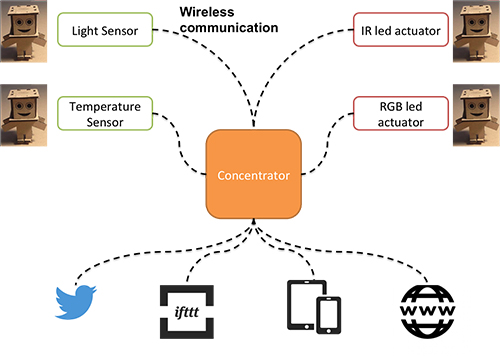
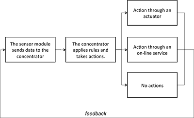
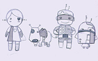
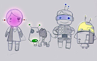

1 - Final Project Proposal: Pool Companion
Intro
The assignment of the first week was to create a personal presentation and a proposal for the final project, but also (to accomplish to these tasks) to get familiar with some technologies, as HTML5 and CSS3 (to design a website) and version control systems. I'm already familiar with HTML5 and CSS3 (even if I'm not a master!), so to design the website I started from a template and I customized it. I used Sublime Text and Text Wrangler (I'm working on two macs with different applications). I was less familiar with CVS (used to download but not to upload) so I went through some tutorials using Git to better understand the conceps of Head, Staging, Commit, Push and Pull. I found this documentation very useful.
To think to something for my final project I started form my ideas about human- computer interaction. I think technology should make things easier, through automation and amplification of human capabilities. However the interaction with tools should be also fun and pleasurable. As human brain is used to consider “alive” everything that shows a “smart” behaviour (and digital tools usually pretend to be smart) I wanted to create an object that has personality and allows a different kind of human-computer interaction.
Final Project Concept
The concept is to create a robot to help in the maintenance of a pool showing also a personality (i.e. posting things on Twitter) to the user, with the aim to create an “emotional” interaction with the user.
Background
There are several projects aimed to control water quality in pools or aquariums. Almost all projects control temperature and pH/oxidation-reduction potential (ORP) as it’s very expensive (and difficult) to control other chemical parameters. However all projects are just measurement tools and the interaction it's just based on a functional goal: Ph-Probe, pHDuino, Pool monitor, OpenSPA Monitor, PoolDuino.
Regarding giving a personality to the objects my inspiration is the work of simone Rebaudengo with his "addicted products" project. Here there is the video of Brad "the toaster".
Addicted products: The story of Brad the Toaster from Simone Rebaudengo on Vimeo.
Brad shows a personality, it feels lonely when nobody uses it, require attention and so on. It communicates through tweets and movements.
Scenario
It is a hot summer evening. The duck is in the pool, alone. Everybody is at work. The duck is feeling alone and starts sending pictures on Twitter/Facebook to invite people to come in. In the meantime the duck checks the temperature and the pH of the water, adding chlorine if needed, so the pool will be ready when people will arrive. Later Max comes back with some friends and they enter into the pool, the duck feels the presence of other people and is happy. It shares a status on Twitter/Facebook. Other ducks in the network read the status...
Main Functionalities
Even if the project is still at the beginning I try to imagine the main functionalities that I can include in the project.
- Check the pH of the pool
- Check other chemical parameters (research needed)
- Release chlorine if needed (or with some external device)
- Check the temperature
- Know if is day or night (light detection)
- Tweet some status according to some rules applied to the parameters monitored
- Detect waves as sign of human activity (people in the pool)
- Show a personality: require attention when nobody is in the pool for a long time, be happy when there are people around, be happy when the water is in good condition
- Swim
- Take picture and upload to the web
To accomplish to these functionalities the system should have:
- pH probe
- Light sensor
- Accelerometer (to feel the waves)
- Can connect to Internet (WiFi) and post on Twitter/Facebook
- Electronics to make everything work!
Challenges
I think that the main challenges to develop the project will be:
- Water and electronics! : choose the right materials to make the structure and protect the electronics from the water and corrosion.
- Power consumption: it should optimize the use of power and recharge with solar panels
Development
The steps to develop the projects will be:
- Defines the main features and functionalities
- Define the shape and choose the materials
- Design the electronics
- Write the code
- High fidelity prototype
- Testing
Another final project proposal
After a couple of weeks reasoning about the project I found some problems. Mainly the pH sensor was too expensive, moreover the continuous exposition to water and chlorine may have consequences in terms of oxidation requiring frequent maintenance. I decided to switch to another project that i called: Little Super Heroes
Little Super Heroes!
We often hear about Internet of Things and about objects that connects to the internet and share data and interact with one another. However the object we have around us are not always IoT enabled and (maybe) we don't want to buy new things. so we can create some little, cheap devices to add functionalities to our objects. To make this devices more attractive they could have the shape of different characters, each one with a special "superpower", some ideas:
- Sense the light: a simple way to interface objects is to check if some led/light is on/off. For example the fridge or a status indicator on other.
- Sense temperature: through a temperature sensor is possible to check the temperature in a room.
- Control everything: using IR leds is possible to create a remote control for almost everything.
- Communicate with light: using an RGB led is possible to use color to communicate something.


I asked to a friend of mine (she's an illustrator) to help me think to some character. So the girl could change color reflecting some mood, the dog could sense react to vibration, the guy could be the universal remote control and the android could sense the light.  .
The "superheroes" share information wireless (maybe Xbee or BLE for low energy consumption) with a coordinator. Then the coordinator acts as a proxy allowing the objects to connect to Internet. Then is possible to use online services as Temboo, ThingSpeak, Xively, IFTTT and similar to add rules or share data.
I made a research to find similar projects: Twine . It monitors temperature, vibration and orientation. Additional sensors detect floods, leaks, opened doors, and signals from your other home systems. Tell a web app what to listen to with simple rules, and you'll get notifications and peace of mind via email, SMS, Twitter and more. A very similar project is Knut that has interchangeable sensors and allows to monitor them from a smartphone. NinjaBlocks also has the capability to control different objects through add-ons.
Scenario
1: Domotic
An example scenario could be self regulating the temperature in a smart home environment. One (or more than one) temperature module checks the temperature in a certain point of the house and sends the data to the concentrator. The concentrator checks if the temperature is within the range given by the user. If the temperature is too high or too low thells to the IR modules to turn on/off the air conditioning. It could also post something on Twitter as ("Today is too hot to work :) " if the temperature is too high).
2: Mood lamp
The concentrator looks on the internet to check some variables according to the user request. As an example it could check the weather (es. Yahoo weather) and set a color on the RGB module according to it (es. a cold color if the weather is bad a warm color if the weather is good).
3: Diet helper
The light sensing module could be set inside the fridge. It sends a message to the concentrator each time the fridge is opened (the light of the fridge goes on).The concentrator checks the number of times per hour the fridge is opened, if it is opened too often it sends a message to the user like "Hey, remember you are on diet!".
To do list
- find an energy efficient way to communicate between modules and coordinator (Xbee?)
- design, make and program the board to read an analog sensor (light and temperature)
- design, make and program the board for the IR module.
- find the codes for the IR modules
- design, make and program the coordinator
 Attribution, non-commercial, share alike.
Attribution, non-commercial, share alike.